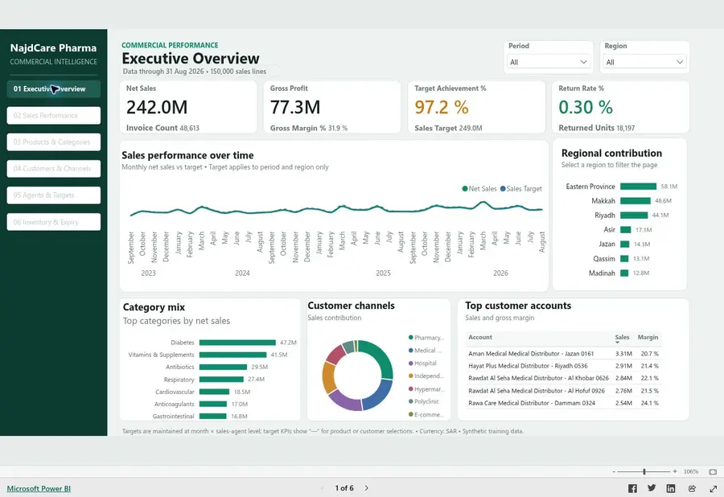

Vitamin C & Calorie Modeling
Which fruit has the most vitamin C? Explore 7,793 foods across 25 categories through data cleaning, nutrient comparisons, visualization and calorie modeling.
Read the case study →Learning record · Verified 23 September 2026
My DataCamp learning spans Python, SQL, statistics, data preparation and machine learning. This record brings the completed training together with the analysis I have built from it.

These are course and track accomplishments. The 25 project records include historical versions of some topics; they are training projects, not 25 separate production systems.
Read the case studies and results without creating an account. Download the code directly or inspect the public GitHub repositories.
Which fruit has the most vitamin C? Explore 7,793 foods across 25 categories through data cleaning, nutrient comparisons, visualization and calorie modeling.
Read the case study →
A six-page Power BI report with 150,000 synthetic sales lines, 70 DAX definitions, a practical guide and a metric dictionary.
Open the case study and live report →Explore the public interactive report and its documented business logic.
DataCamp training catalogue links below may require an account or subscription. The public case studies above are independently accessible.
These milestones follow the dated certificates and published work; they do not assume uninterrupted activity between documented points.
Completed Data Manipulation with pandas on 31 July, while building a foundation in Python.
Explore the evidence →Intermediate SQL in September, scikit-learn in October, the cleaning track in November and statistics fundamentals in December.
Explore the evidence →Published the food analysis on 11 December: 7,793 records, visual exploration and regression models.
Explore the evidence →Power BI visualization and data manipulation in February; Data Scientist in March; SQL Fundamentals in April; Data Analyst and Python Data Fundamentals in July.
Explore the evidence →Reviewed the analysis, exposed code and results, and connected 74 courses, 7 tracks and 25 guided project records to the portfolio. Data warehouse development remains a separate work in progress.
Explore the evidence →Each link opens DataCamp’s verification page. These statements document completed learning tracks and are distinct from DataCamp’s professional certification exams.
Images are direct renders of the original PDFs. Dates follow the statements; the account history can differ by one day. Select an image to enlarge it or open the PDF.
Original statements for pandas, SQL, machine learning and Power BI. All 74 completed courses and their verification links remain in the list below.
The catalogue preserves every completed entry from my activity record, including legacy titles. Links open the current DataCamp catalogue; a catalogue page describes the assignment and is not a public copy of my saved solution. Opening a DataCamp exercise may require an account or subscription.
25 projects
| No. | Project | Activity status |
|---|---|---|
| 01 | Uncovering the World's Oldest BusinessesGuided training project; completion recorded in DataCamp. | Completed |
| 02 | Hypothesis Testing with Men's and Women's Soccer MatchesGuided training project; completion recorded in DataCamp. | Completed |
| 03 | When Was the Golden Era of Video Games?Guided training project; completion recorded in DataCamp. | Completed |
| 04 | Modeling Car Insurance Claim OutcomesGuided training project; completion recorded in DataCamp. | Completed |
| 05 | Predicting Movie Rental DurationsGuided training project; completion recorded in DataCamp. | Completed |
| 06 | Clustering Antarctic Penguin SpeciesGuided training project; completion recorded in DataCamp. | Completed |
| 07 | Predictive Modeling for AgricultureGuided training project; completion recorded in DataCamp. | Completed |
| 08 | Analyzing Students' Mental HealthGuided training project; completion recorded in DataCamp. | Completed |
| 09 | Exploring Airbnb Market TrendsGuided training project; completion recorded in DataCamp. | Completed |
| 10 | Analyzing Crime in Los AngelesGuided training project; completion recorded in DataCamp. | Completed |
| 11 | Exploring NYC Public School Test Result ScoresGuided training project; completion recorded in DataCamp. | Completed |
| 12 | Visualizing the History of Nobel Prize WinnersGuided training project; completion recorded in DataCamp. | Completed |
| 13 | Exploring London's Travel NetworkGuided training project; completion recorded in DataCamp. | Completed |
| 14 | Customer Analytics: Preparing Data for ModelingGuided training project; completion recorded in DataCamp. | Completed |
| 15 | Planning a Trip to Paris with the OpenAI APIGuided training project; completion recorded in DataCamp. | Completed |
| 16 | A Visual History of Nobel Prize WinnersHistorical completion; current catalogue has changed. | Completed |
| 17 | Investigating Netflix MoviesGuided training project; completion recorded in DataCamp. | Completed |
| 18 | Consolidating Employee DataGuided training project; completion recorded in DataCamp. | Completed |
| 19 | Naïve Bees: Predict Species from ImagesHistorical completion; current catalogue has changed. | Completed |
| 20 | Naïve Bees: Image Loading and ProcessingHistorical completion; current catalogue has changed. | Completed |
| 21 | Analyze International Debt StatisticsHistorical completion; current catalogue has changed. | Completed |
| 22 | Introduction to DataCamp ProjectsGuided training project; completion recorded in DataCamp. | Completed |
| 23 | Generating Keywords for Google AdsHistorical completion; current catalogue has changed. | Completed |
| 24 | What and Where are the World's Oldest BusinessesHistorical completion; current catalogue has changed. | Completed |
| 25 | Investigating Netflix Movies and Guest Stars in The OfficeHistorical completion; current catalogue has changed. | Completed |
Browse the full list and open the individual accomplishment links.
74 courses
| Course | Evidence |
|---|---|
| Object-Oriented Programming in Python | View certificate ↗ |
| Analyzing Marketing Campaigns with pandas | View certificate ↗ |
| Analyzing Business Data in SQL | View certificate ↗ |
| Applying SQL to Real-World Problems | View certificate ↗ |
| Introduction to Deep Learning with PyTorch | View certificate ↗ |
| Containerization and Virtualization Concepts | View certificate ↗ |
| Model Validation in Python | View certificate ↗ |
| Feature Engineering for Machine Learning in Python | View certificate ↗ |
| Advanced Deep Learning with Keras | View certificate ↗ |
| Data-Driven Decision Making in SQL | View certificate ↗ |
| Exploratory Data Analysis in SQL | View certificate ↗ |
| Introduction to Deep Learning with Keras | View certificate ↗ |
| Marketing Analytics: Predicting Customer Churn in Python | View certificate ↗ |
| Machine Learning for Time Series Data in Python | View certificate ↗ |
| Dimensionality Reduction in Python | View certificate ↗ |
| Cluster Analysis in Python | View certificate ↗ |
| Manipulating Time Series Data in Python | View certificate ↗ |
| Database Design | View certificate ↗ |
| Writing Efficient Code with pandas | View certificate ↗ |
| Analyzing Social Media Data in Python | View certificate ↗ |
| Introduction to Relational Databases in SQL | View certificate ↗ |
| Developing Python Packages | View certificate ↗ |
| Preprocessing for Machine Learning in Python | View certificate ↗ |
| Functions for Manipulating Data in PostgreSQL | View certificate ↗ |
| Software Engineering Principles in Python | View certificate ↗ |
| Machine Learning for Business | View certificate ↗ |
| Writing Efficient Python Code | View certificate ↗ |
| Data Types in Python | View certificate ↗ |
| Introduction to NumPy | View certificate ↗ |
| Introduction to Shell | View certificate ↗ |
| Practicing Coding Interview Questions in Python | View certificate ↗ |
| Extreme Gradient Boosting with XGBoost | View certificate ↗ |
| Machine Learning with Tree-Based Models in Python | View certificate ↗ |
| Data Visualization in Power BI | View certificate ↗ |
| PostgreSQL Summary Stats and Window Functions | View certificate ↗ |
| Understanding Data Engineering | View certificate ↗ |
| Linear Classifiers in Python | View certificate ↗ |
| Introduction to DAX in Power BI | View certificate ↗ |
| Introduction to Power BI | View certificate ↗ |
| Data Manipulation in SQL | View certificate ↗ |
| Unsupervised Learning in Python | View certificate ↗ |
| Intermediate Regression with statsmodels in Python | View certificate ↗ |
| Hypothesis Testing in Python | View certificate ↗ |
| Sampling in Python | View certificate ↗ |
| Introduction to Regression with statsmodels in Python | View certificate ↗ |
| Working with Dates and Times in Python | View certificate ↗ |
| Data Communication Concepts | View certificate ↗ |
| Writing Functions in Python | View certificate ↗ |
| Reshaping Data with pandas | View certificate ↗ |
| Working with the OpenAI API | View certificate ↗ |
| Working with Categorical Data in Python | View certificate ↗ |
| Cleaning Data in Python | View certificate ↗ |
| Supervised Learning with scikit-learn | View certificate ↗ |
| Intermediate R | View certificate ↗ |
| Joining Data in SQL | View certificate ↗ |
| Intermediate Importing Data in Python | View certificate ↗ |
| Introduction to Importing Data in Python | View certificate ↗ |
| Intermediate SQL | View certificate ↗ |
| Exploratory Data Analysis in Python | View certificate ↗ |
| Intermediate Data Visualization with Seaborn | View certificate ↗ |
| Python Toolbox | View certificate ↗ |
| Understanding ChatGPT | View certificate ↗ |
| Introduction to Functions in Python | View certificate ↗ |
| Introduction to Python for Finance | View certificate ↗ |
| Introduction to SQL | View certificate ↗ |
| Introduction to R | View certificate ↗ |
| Introduction to Data Visualization with Seaborn | View certificate ↗ |
| Data Science for Business | View certificate ↗ |
| Introduction to Data Visualization with Matplotlib | View certificate ↗ |
| Introduction to Statistics in Python | View certificate ↗ |
| Joining Data with pandas | View certificate ↗ |
| Data Manipulation with pandas | View certificate ↗ |
| Intermediate Python | View certificate ↗ |
| Introduction to Python | View certificate ↗ |